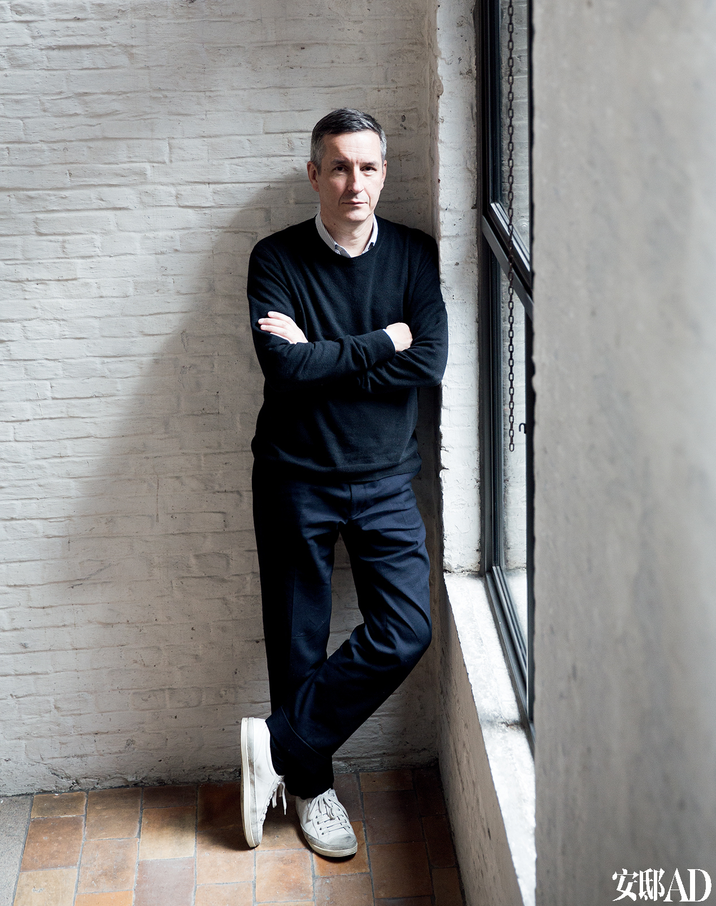
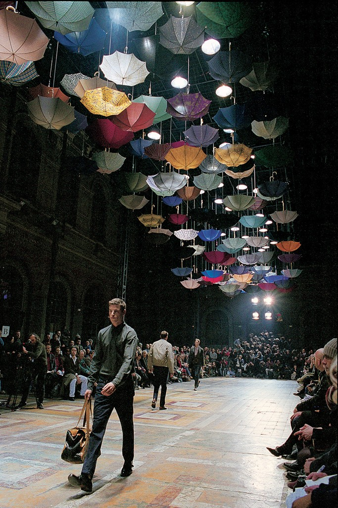
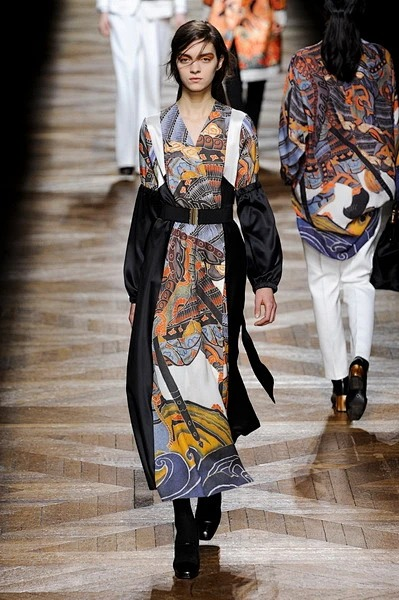
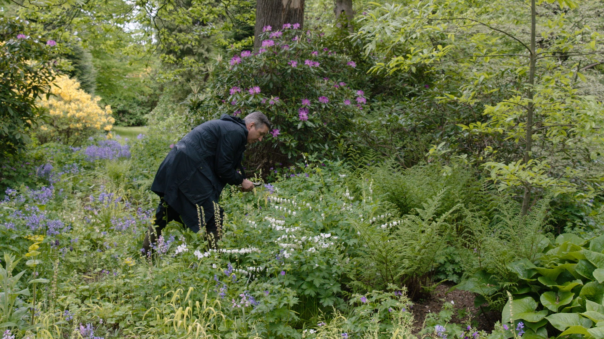
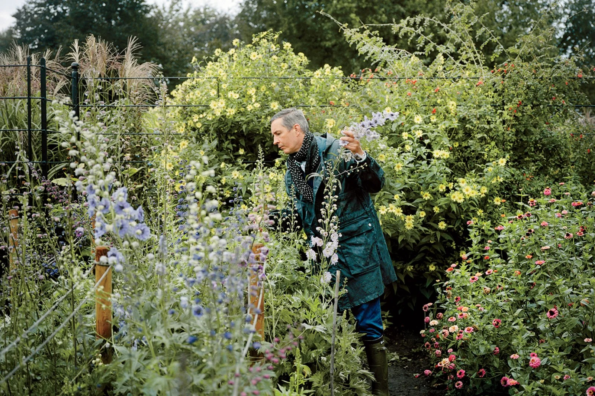

1999 男装 "雨伞" 大秀 装置即世界观
上百把花伞悬吊在观众头顶，衣随身走——这是他最被铭记的秀场画面之一。
比利时的清晨，细雨。
一个男人在花园里弯腰剪花——
牡丹、飞燕草、月季，
露水还挂在花瓣上。
这座花园有55英亩，
是他和伴侣一起种了三十年的。
他剪下花，不是为了插瓶，
而是为了把它们变成印花，
印在来年春天的裙子上。
1986年，他和五个安特卫普皇家美术学院的同窗——其中就有 Ann Demeulemeester——开着一辆货车去伦敦办秀。他们被叫作"安特卫普六君子"。别人做极简，他做印花：弗拉芒古画的颜料、波斯的织锦、西藏的僧袍色，全部熔进一件外套。四十年里他换着方式只做一件事——让花、让颜色、让织物讲故事。

而这一切的根，藏在花园里。2019年秋冬，他没有找图案库——直接从 Ringenhof 花园剪下花，扫描、制版、印花。T台上的每一朵花，都真的在他的土壤里活过。2024年6月，他在巴黎办了最后一场男装秀：银箔铺成的T台，1993年首秀的模特回来谢幕，全场喝着比利时啤酒流泪。他说，这不是终章——花园明年还会开花。
如果你想亲眼看看：去搜 Dries Van Noten 1999 男装"雨伞"大秀——上百把伞悬在观众头顶；以及 Vogue 拍摄的 Ringenhof 花园特辑。当你看到那些被穿在身上的花，可能就会明白——
真正的奢侈，是把一座花园穿在身上。



